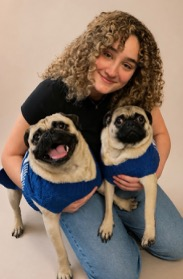
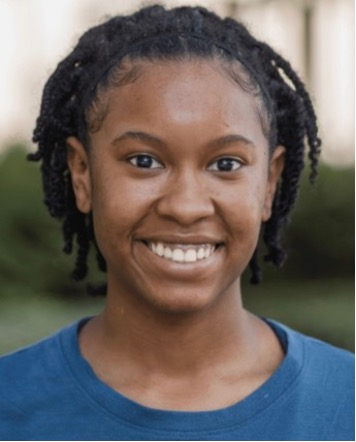
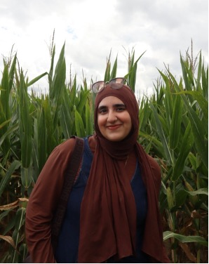
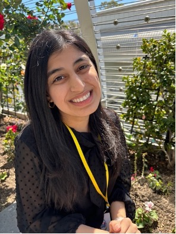
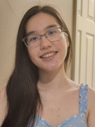
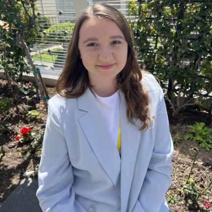

Dr. Fan Zhang
Dr. Zhang is an Assistant Professor in the Department of Biological Sciences at Louisiana State University. The laboratory studies how naturally associated microbes regulate host fitness, endocrine signaling, and aging using Caenorhabditis elegans as a genetically tractable model.
Email: fanzhang@lsu.edu
Office:
478 Our Lady of the Lake Health Interdisciplinary Science Building
Lab:
405 Our Lady of the Lake Health Interdisciplinary Science Building
Current Members

Victoria Rodriguez
I am a Ph.D. student in Biochemistry at Louisiana State University in Dr. Fan Zhang's lab. My research uses Caenorhabditis elegans to study how environmentally persistent free radicals (EPFRs) affect oxidative stress, mitochondrial function, and aging. I am interested in understanding how environmental exposures impact organismal health and contribute to long-term physiological changes.
Gabbie Dietel
I graduated from the University of Louisiana at Lafayette in December 2024 with a Bachelor of Science in Biology where I discovered and fostered my passion for research and microbiology. Currently, I am working on the effects of modulating C. elegans diet to identify an Insulin/Insulin-like Signaling (IIS) antagonist in humans.

Briana Elisa Barnum
Greetings! I am a recent graduate from Louisiana State University receiving a Bachelor of Science in Biological Sciences. I am currently a post-baccalaureate researcher in Dr. Fan Zhang's Lab where I investigate the impacts of environmental pollutants on health and aging in Caenorhabditis elegans. I spend my free time practicing my faith in Christ, watching anime, and singing.

Asalah Kasem
I am a senior majoring in Biological Sciences and English. In the lab I help compare the effects of oxidative stress and nanoparticle exposure on gene expression of Caenorhabditis elegans and assist with lab maintenance. When I get the time, I enjoy binge reading books and writing.
Alumni

Mina Sheikh
I am a senior majoring in Biological Sciences and my goal is to attend medical school after graduation. I'm a student of the Ogden Honors College and pursued my Honors Thesis in the Zhang Lab. Apart from my academic pursuits, I enjoy running and photography.

Molly Dreznick
I am a sophomore (soon to be junior!) in Honors hoping to major in microbiology and minor in international studies. I perform lab maintenance and other tasks such as worm picking and data collection when needed. Besides lab work, I also use my hands to fight people in chess and grip rocks on a rock-climbing wall.

Emma Stevens
I am a senior majoring in Biological Sciences and Music. After graduation, I will be moving to Chicago to work as a Manufacturing Coordinator (QA, Operations, and R&D) in the food processing industry. In the lab, I worked to record and quantify C. elegans lifespan, reproduction, and internal egg hatching.
Emily Clemens
I am a senior majoring in Microbiology. I plan on attending perfusion school after graduation. While in the lab, I handled worm picking, reproduction measurements, agar plate preparation, and supported various laboratory tasks.